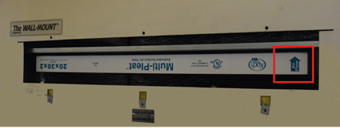

Installation of the Air
Conditioning Unit - Filter.
-
Install the new Filter in the air filter tray. The air flow arrow (see
red square in Figure 1) has to point upwards!
Figure 1.
Installation position of filter

-
Reinstall the Filter
Access Cover with the six screws (see Figure 1).
-
Switch both MDB circuit breakers for the Air Conditioning Unit to ON.